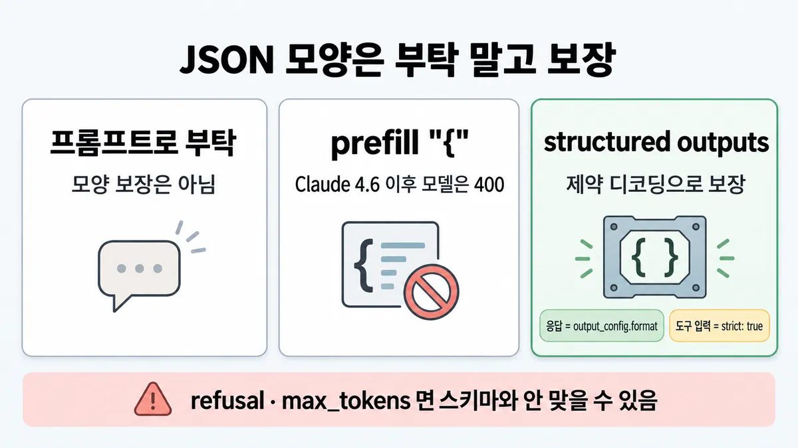
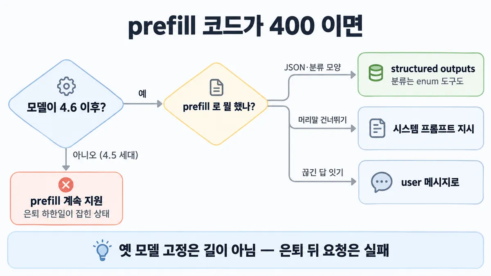
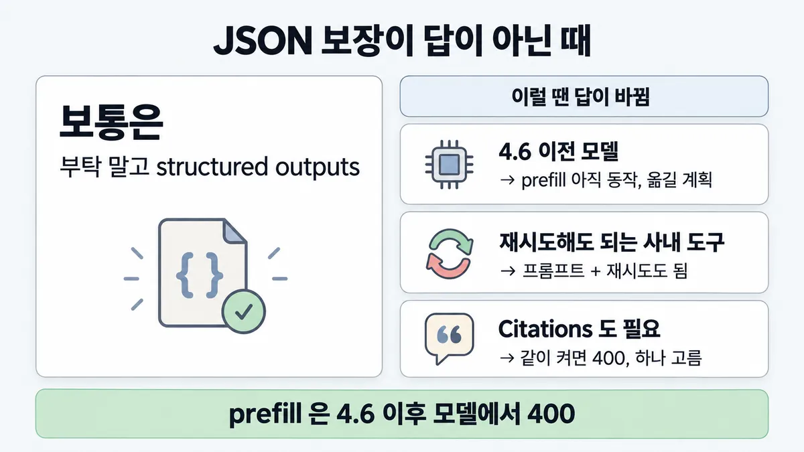

■ structured outputs
표시가 없는 문장은 공식 문서에서 확인한 내용이에요. 다른 표시는 읽는 법
왜 배우나 — 시험이 요구하는 것
시험 목표 2.2 시스템 프롬프트와 가드레일 · D2 모델·프롬프트 13%Design system prompts, templates, and guardrails
이 개념으로 푸는 판단 (할 수 있어야 하는 것)
- 2.2② JSON 모양·금지 규칙을 꼭 지켜야 한다 — 프롬프트? prefill? 스키마? — 유도(프롬프트) vs 강제(스키마·enum 도구·훅) · prefill 400 을 만났을 때의 수리
- 1.2① 입력·처리·출력·피드백, 각 칸은 무슨 일을 맡나? — 단계마다 책임 나누기 (입력 선별 → 보강된 LLM 처리 → 모양이 정해진 출력 → 평가 결과를 되돌리는 길)
- 4.4③ 형식이 매번 깨진다 vs 더 강한 설정에서만 풀린다 — prompt failure vs model mismatch 가르기
- 5.4① 병원 환자 메시지를 Claude API 로 — BAA·HIPAA readiness 면 되나, ZDR 도? — HIPAA 구성 고르기 (BAA + HIPAA readiness + PHI 경계) vs ZDR
한눈에
JSON 모양은 부탁(프롬프트)이 아니라 structured outputs 의 제약 디코딩(constrained decoding)으로 보장. 응답 모양 = JSON outputs(output_config.format), 도구 입력 = strict tool use(strict: true), 한 요청에 둘 다 가능
옛 수단 prefill(마지막 assistant 턴에 "{" 채우기)은 Claude 4.6 이후 모델에서 400
비유 출력을 grep 으로 긁어 검사하던 걸 스키마 검증(admission 정책)으로 바꾸기 / 폐기된 API 버전을 부르면 에러


ELI5
택배 상자를 부탁으로 맞추느냐, 틀에 넣어 찍어 내느냐예요.
- "네모나게 싸 주세요" 라고 부탁하면 대부분 네모지만 가끔 찌그러져요.
- 틀에 넣어 찍으면 늘 네모예요. 그게 structured outputs 예요.
- 예전엔 상자 뚜껑을 미리 반쯤 접어 두는 요령(prefill)을 썼는데, 새 기계는 그걸 받지 않아요.
- 틀이 있어도 기계가 "이건 못 싸요" 하거나 중간에 멈추면 상자가 비어 올 수 있어요.
개념 설명
원리
부탁 vs 보장
- 프롬프트로 "JSON 으로" 라고 하면 대개 맞지만, 파싱 오류·필수 필드 누락·타입 불일치가 섞일 수 있음.
- structured outputs 는 스키마를 문법으로 컴파일해 생성 단계에서 벗어난 토큰을 못 고르게 함(constrained decoding) → 항상 유효 · 타입 안전 · 스키마 위반 재시도 불필요.
- 두 갈래 : 응답 전체 모양 = JSON outputs(
output_config.format) / 도구 입력 모양 = strict tool use(strict: true). 한 요청에 둘 다.
prefill 은 왜 막혔나
- prefill = 마지막 assistant 턴에 답의 앞머리("{", "```json")를 넣어 이어 쓰게 하던 요령.
- Claude 4.6 이후 모델 + Mythos Preview 는 이걸 400 으로 거절. 모델의 지시 따르기가 좋아져 대부분 필요 없어졌고, 모양은 structured outputs 가 전담.
- 이전 모델(4.5 세대)은 계속 됨. 단 thinking 켠 동안엔 모델 불문 prefill 불가, JSON outputs 와도 같이 못 씀.
강제 도구 호출도 모델별
tool_choiceany·tool은 내부적으로 prefill 로 도구 호출을 강제함(그래서tool_use앞에 설명 문장이 안 나옴).- Opus 5.5 · Fable 5.1 · Mythos 5.1 은 이 강제 자체를 400 으로 거절 →
auto+ strict tool use, 또는 structured outputs. 어느 도구를 고를지는 프롬프트가 좌우.
보장의 경계
- 모양만 보장. refusal(HTTP 200)·max_tokens 잘림이면 스키마와 안 맞을 수 있고, enum 대소문자도 보장 안 함.
- 값의 뜻(합계·필드 위치)은 스키마 밖 → 뒤쪽 검증.
규칙과 판단


갈림길
①② 무엇의 모양? [2.2②] [1.2①]
JSON outputs
output_config.format + type: "json_schema"
strict tool use
도구 정의 최상위에 strict: true
enum
enum 필드가 있는 도구, 또는 structured outputs. 대소문자는 보장 안 함 → 대소문자 무시 비교
③④ prefill 코드가 400 [2.2②] [4.4③]
structured outputs
분류는 enum 도구도
시스템 프롬프트 지시
"Respond directly without preamble" · XML 태그 · 그래도 머리말이 가끔 나오면 후처리로 떼기
user 메시지로
끊긴 끝을 user 턴에 넣고 이어 쓰라고
thinking 켬 · JSON outputs 여부 먼저
이전 모델은 계속 지원. 단 thinking 켠 동안엔 prefill 못 함 · JSON outputs 와 같이 못 씀 · 최소 지원 기한이 정해진 상태
⑤ 강제 도구 호출이 400 [2.2②]
auto + strict
tool_choice any·tool = 400 → auto + strict tool use, 또는 structured outputs 시험 뒤 변경
any·tool 그대로
단 수동 extended thinking 과는 같이 못 씀
흐름
그림 속 이름·금액·시간·토큰 수는 예시예요. 공식 한도·동작은 카드 본문 값이 기준.
장면 글로 보기
칸 : 앱 → API → 모델
질문 : 모양은 누가 보장할까?
① structured outputs ✓
- 시작 : 앱 — 쪽지 : 메일: "우산 2개, / 내일까지 보내 주세요"
- 요청 : 앱 → API :
output_config.format+ 스키마 — 쪽지 : format: type "json_schema" / + 스키마 {상품, 수량} - 생성 : 모델 : 제약 디코딩(constrained decoding) — 쪽지 : 스키마대로만 생성 / {"상품": "우산", …
- 응답 : 모델 → 앱 : 스키마 맞는 JSON — 쪽지 : {"상품": "우산", / "수량": 2}
- 끝 : 항상 유효 — 스키마 위반 재시도 필요 없음
② prefill "{" ≠
- 시작 : 앱 — 쪽지 : 메일: "우산 2개, / 내일까지 보내 주세요"
- 요청 : 앱 → API : 마지막 assistant 턴에 "{" — 쪽지 : 모델: Sonnet 5 / 마지막 턴: / {role: "assistant", "{"}
- 거절 : API : 400
invalid_request_error— 쪽지 : HTTP 400 / invalid_request_error - 건너뜀 : 모델
- 끝 : Claude 4.6 이후 모델 + Mythos Preview 는 prefill 400
③ 보장의 구멍 ≠
- 시작 : 앱 — 쪽지 : 메일: 주문 180건 목록 / (아주 김)
- 요청 : 앱 → API :
output_config.format+ 스키마 — 쪽지 : format: type "json_schema" / max_tokens: 1024 - 생성 : 모델 : 잘림(max_tokens) 또는 거절(refusal) — 쪽지 : … {"상품": "장
- 응답 : 모델 → 앱 : 스키마와 안 맞을 수 있음 — 쪽지 : stop_reason: "max_tokens" / [{"상품": "우산", …, / {"상품": "장
- 끝 : 보장에도 예외 — stop_reason 먼저 봄
나머지 규칙
-
보장의 구멍 :
stop_reason: "refusal"(HTTP 200 · 과금됨) ·"max_tokens"(잘림 → 더 큰max_tokens로 재시도)면 스키마와 안 맞을 수 있음 → ■ stop_reason 으로 분기모양만 보장 — 값의 뜻(항목 합계 ≠ 총액, 엉뚱한 필드)은 못 막음 업계 일반 CCA-F 노트 4.3
형식이 자꾸 깨질 때 프롬프트 탓·모델 탓 가르기 → ◆ prompt failure vs model mismatch · 행동을 꼭 막아야 함(삭제 금지 등) → ◆ 안내(프롬프트) vs 강제(구성·코드)
-
지원 모델 = 지금 Active 모델 전부(4.5 세대 포함) · Amazon Bedrock 에선 Opus 4.6 · Sonnet 4.6 · Sonnet 4.5 · Opus 4.5 · Haiku 4.5 만 (2026-09-28 조회)
비용·제약 : 새 스키마 첫 요청은 문법 컴파일 지연(latency), 컴파일 결과는 마지막 사용 뒤 24시간 캐시 ·
output_config.format을 바꾸면 그 대화의 프롬프트 캐시 무효 · 요청당 strict 도구 20 · 선택 파라미터 24 · union 타입 16 · Citations 와 같이 켜면 400 · PHI 는 스키마(속성 이름·enum·const·pattern)에 넣지 않음 [5.4①]
규칙 원문 ①②③④⑤ (갈림길로 그린 규칙)
-
모양 강제 = structured outputs [2.2②] [1.2①]
JSON outputs :
output_config.format에type: "json_schema"+ 스키마 → text 블록에 스키마 맞는 JSON (옛output_format→output_config.format, 2026-01-29 GA)strict tool use : 도구 정의 최상위
strict: true→tool_use의input이input_schema를 그대로 따르고name도 항상 유효둘 다 한 요청에 = 믿을 수 있는 도구 호출 + 구조화된 최종 답
공식 마이그레이션 글은 "먼저 모델에게 구조를 따르라고 말해 보기(재시도 포함)" 도 듦 — 새 모델은 말하면 복잡한 스키마도 잘 맞춤. **보장**이 필요하면 structured outputs
-
분류 = enum 필드를 가진 도구 또는 structured outputs
enum·const 값의 대소문자는 보장 안 함 — 오류·특별 stop_reason 없이 그대로 옴 → 대소문자 무시 비교 · 대소문자만 다른 값 금지
-
prefill 400 : Claude 4.6 이후 모델 + Mythos Preview 는 마지막 assistant 턴 prefill = 400
invalid_request_error. 이전 모델은 계속 지원 · 대화 중간의 assistant 메시지는 영향 없음 [2.2②] [4.4③]→ 지금 Active 중 prefill 되는 건 Opus 4.5 · Sonnet 4.5 · Haiku 4.5 뿐 (모델 목록 대조 계산, 2026-09-28 조회)
thinking 켠 동안엔 모델과 상관없이 prefill 못 함 · JSON outputs 와 prefill 은 호환 안 됨
옮기는 법 : 모양 = structured outputs / 분류 = enum 도구 / 머리말 = 시스템 프롬프트 지시(+XML 태그·후처리) / 이어 쓰기 = user 메시지로 / 맥락 다시 넣기 = user 턴·도구·compaction
-
옛 모델 고정은 길이 아님 : prefill 되는 4.5 세대는 은퇴 "하한일"(Not sooner than)만 잡힌 Active — Sonnet 4.5 2026-09-29 · Haiku 4.5 2026-10-15 · Opus 4.5 2026-11-24 이후 (2026-09-28 조회)
공개 모델은 은퇴 최소 60일 전 통보 · 은퇴 날짜가 지난 모델 요청은 실패
-
강제 도구 호출(
tool_choiceany·tool) : Opus 5.5 · Fable 5.1 · Mythos 5.1 은 모든 요청에서 400 →auto+ strict tool use, 또는 고정 JSON 응답이면 structured outputs.auto가 어느 도구를 고를지는 여전히 프롬프트가 좌우 시험 뒤 변경 Fable 5.1 2026-09-01 · Opus 5.5 2026-09-22, 2026-09-28 조회다른 모델 : 수동 extended thinking(
type: "enabled")과any·tool은 같이 못 씀 ·any·tool이면 API 가 prefill 해서tool_use앞에 설명 문장이 안 나옴
더 깊이 : 판단 규칙 · 상황 변수 (설명)
판단 규칙
| 조건 | 답 | 등급 | 근거 |
|---|---|---|---|
| 뒤쪽 코드가 응답을 JSON 으로 파싱해야 함 | JSON outputs (output_ + type: "json_) | structured-outputs | |
도구 인자 타입이 자꾸 틀림("2" vs 2) | strict tool use (strict: true) | strict-tool-use | |
| 분류 라벨을 정해진 값 중 하나로 | enum 필드 가진 도구 또는 structured outputs | prompting-best-practices en-full | |
| prefill 코드가 새 모델에서 400 | 모양 = structured outputs · 머리말 = 시스템 프롬프트 지시 · 이어 쓰기 = user 메시지로 | en-full · errors | |
| 지문 모델이 4.5 세대이고 thinking 꺼짐 | prefill 동작함(옛 코드가 틀린 게 아님) | en-full "Earlier models continue to support prefills" · thinking | |
Opus 5.5·Fable 5.1·Mythos 5.1 에 tool_ any·tool | 400 → auto + strict tool use 또는 structured outputs | 시험 뒤 변경 | define-tools · errors · 릴리스 노트 |
stop_ 이 refusal·max_ | 스키마 불일치 가능 → stop_reason 먼저 분기, max_ 면 늘려 재시도 | structured-outputs | |
| enum 비교 | 대소문자 무시 비교 · 대소문자만 다른 값 금지 | structured-outputs | |
| 출력 JSON 에 근거 인용(Citations)도 | 같이 못 켬(400) | structured-outputs | |
| HIPAA 조직에서 structured outputs | 사용 가능, PHI 는 스키마(속성 이름·enum·const·pattern)에 넣지 않음 | structured-outputs |
상황 변수
| 변수 | 값 | 답 쪽 | 등급 | 근거 |
|---|---|---|---|---|
| 모델 세대 | Claude 4.6 이후 · Mythos Preview | prefill 400 | errors | |
| 모델 세대 | Opus 4.5 · Sonnet 4.5 · Haiku 4.5 | prefill 됨 (thinking 꺼짐일 때) | 계산 | "4.6 이후" 규칙 × model-deprecations 목록 en-full |
| 모델 | Opus 5.5 · Fable 5.1 · Mythos 5.1 | 강제 도구 호출 400 | 시험 뒤 변경 | define-tools |
| thinking | 수동 extended thinking(type: "enabled") | any·tool 불가 | define-tools | |
| thinking | 켜짐(어느 방식이든) | prefill 불가 | thinking | |
| 필요한 것 | 보장(뒤쪽 파서가 재시도 못 함) | structured outputs | structured-outputs | |
| 필요한 것 | 대체로 맞으면 됨 · 재시도 가능 | 프롬프트로 구조 요청 + 재시도도 공식 경로 | en-full "Try asking the model to conform… especially if implemented with retries" | |
| 스키마 | 자주 바뀜 | 바꿀 때마다 첫 요청 컴파일 지연(latency) · 프롬프트 캐시 무효 | structured-outputs | |
| 스키마 | strict 도구 20개 초과 · 선택 파라미터 24 초과 · union 16 초과 | 한도 초과 → 중요한 도구만 strict · 선택 파라미터를 되도록 required 로 · 요청 나누기 | structured-outputs | |
| 플랫폼 | Amazon Bedrock | structured outputs 는 Opus 4.6·Sonnet 4.6·Sonnet 4.5·Opus 4.5·Haiku 4.5 만 | (해석은 미해결 2) | structured-outputs en-full |
연습 문제
주문 메일에서 JSON 을 뽑던 파이프라인을 Sonnet 5 로 옮기자4.6 이후 모델 모든 요청이 400 invalid_request_error 다. 코드는 마지막 assistant 턴에 "{" 를 채워 JSON 을 받던prefill 방식이다. 팀은 "prefill 되는 옛 모델로 고정하자"고 한다. 무엇으로 옮길까?
시험 대비
함정
- "prefill 을 더 길게 채운다" → 4.6 이후 모델은 마지막 assistant 턴 prefill 자체가 400. 길이 무관
- "prefill 되는 옛 모델로 영구 고정" → 4.5 세대는 최소 지원 기한만 정해진 상태, 은퇴 뒤 요청은 실패
- "prefill 이 보이면 모델 불문 무조건 틀림" → 이전 모델(4.5 세대)은 지원. 지문의 모델명·thinking 켬 여부 먼저
- "JSON 을 정규식으로 긁고 재시도 횟수를 늘림" → structured outputs 면 스키마 위반 재시도가 필요 없음
- "structured outputs 면 무조건 스키마대로 · enum 도 글자 그대로" → refusal·max_tokens 예외 + enum 대소문자 미보장
- "분류 도구를
tool_choice: tool로 못 박기" (CCA-F 식) → Opus 5.5·Fable 5.1·Mythos 5.1 에선 400.auto+ strict 시험 뒤 변경 - "근거도 달게 Citations 를 같이 켠 JSON" →
output_config.format+ Citations = 400 - Skilljar API 강의(2025 제작 추정) "prefill "``
json" + stop sequence "``" 로 깨끗한 JSON" → 4.6 이후 모델에선 400. 지금은 structured outputs
신호
"Structured outputs guarantee schema-compliant responses through constrained decoding"
"Requests with prefilled assistant messages to these models return a 400 error."
"Earlier models continue to support prefills, and adding assistant messages elsewhere in the conversation is not affected."
"For classification tasks, use either tools with an enum field containing your valid labels or structured outputs."
"Structured outputs don't guarantee the capitalization of string enum and const values"
"Claude Opus 5.5, Claude Fable 5.1, and Claude Mythos 5.1 don't support forced tool use." (docs errors)


더 깊이 : 뒤집히는 때 · 오답 재료 (설명)
뒤집히는 때
1. prefill 코드가 아직 맞는 때
- 조건 : 지문이 "Haiku 4.5 · thinking 꺼짐 · prefill '{' 로 받는 분류 파이프라인이 잘 돈다" 고 하고 보기가 "prefill 은 무조건 400 이니 즉시 지운다".
- 판단 : Haiku 4.5 는 4.6 이전 모델 → prefill 동작. "즉시 지운다" 는 과함. 다만 옮길 계획은 필요(은퇴 경로).
- 계산 : Haiku 4.5 는 2026-09-28 에 Active, 은퇴 "하한일" 2026-10-15. 공개 모델은 은퇴 최소 60일 전 통보 → 오늘(9/28) 통보가 나와도 실제 은퇴는 빨라야 11/27. 하한일(10/15)보다 60일 규칙이 더 늦음.
- 전제 : 60일 통보 규칙이 그대로 지켜짐 · Anthropic 운영 플랫폼 기준(Bedrock·Google Cloud 는 자체 일정).
- 등급 : (규칙·날짜) · 계산(11/27)
- 근거 : prompting-best-practices en-full · model-deprecations en-full
2. CCA-F 식 "첫 턴 tool_choice: tool 로 못 박기" 가 틀리는 때
- 조건 : 지문 모델이 Opus 5.5(또는 Fable 5.1). 추출 도구를 반드시 부르게 하려고
{"type": "tool", "name": "extract_invoice"}. - 판단 : 모든 요청에서 400.
auto+ strict tool use 로 입력 모양을 보장하고, 부를지는 프롬프트로 이끎. 응답 모양만 필요하면 structured outputs. - 등급 : 시험 뒤 변경(Fable 5.1 2026-09-01 · Opus 5.5 2026-09-22) — 가이드(2026-07) 기준 시험은 옛 동작(
tool강제 가능)으로 물을 가능성 - 근거 : define-tools · errors · 릴리스 노트
3. 스키마 보장보다 프롬프트 + 재시도가 충분한 때
- 조건 : 사내 도구, 하루 요청 적음, 형식 실패가 나면 다시 부르면 되는 흐름. 실패율 2%(가정).
- 계산 : 재시도로 기대 호출 수 = 1 / (1 − 0.02) ≈ 1.02 → 토큰 약 2% 더. 두 번 연속 실패 = 0.02² = 0.04%. structured outputs 는 매 요청 형식 설명 시스템 프롬프트 토큰이 더 붙고, 스키마를 바꾸면 첫 요청 컴파일 지연.
- 판단 : 공식 마이그레이션 글도 "먼저 구조를 따르라고 말해 보기(재시도 포함)" 를 듦 → 보장이 필요 없는 곳에선 프롬프트가 설 자리가 있음. 뒤쪽 파서가 재시도할 수 없거나 실패가 사고로 이어지면 structured outputs.
- 전제 : 실패율 2% 는 가정값(공식 숫자 없음) · 재시도 지연이 문제 안 됨.
- 등급 : 계산(가정 포함)
- 근거 : en-full · structured-outputs
4. 근거 인용이 꼭 필요한 때
- 조건 : 문서 질의 답을 JSON 으로 받고 인용(Citations)도 달고 싶음.
- 판단 :
output_config.format+ Citations = 400. 둘 중 하나를 고르거나 다른 경로가 필요. - 등급 : (400) · 대안은 미해결 3
- 근거 : structured-outputs
오답 재료
| 오답 | 왜 끌리나 | 왜 틀리나 | 등급 | 근거 |
|---|---|---|---|---|
| "prefill 을 더 길게 채운다" | 더 많이 채우면 더 잘 따를 것 같음 | 4.6 이후는 마지막 assistant 턴 prefill 자체가 400 | errors | |
| "prefill 되는 옛 모델로 영구 고정" | 코드 안 고쳐도 됨 | 4.5 세대는 최소 지원 기한이 정해진 상태, 은퇴 뒤 요청 실패 | model-deprecations en-full | |
| "prefill 이 보이면 모델 불문 오답" | '4.6 부터 400' 을 과하게 일반화 | 이전 모델은 지원 — 지문 모델명·thinking 먼저 | en-full | |
| "JSON 을 정규식으로 긁고 재시도 횟수를 늘림" | 당장 고치기 쉬움 | structured outputs 면 스키마 위반 재시도 불필요 | structured-outputs | |
| "structured outputs 면 무조건 스키마대로" | '보장' 이라는 말 | refusal·max_tokens 예외 | structured-outputs | |
| "enum 이니 글자 그대로 비교" | 제약 디코딩이니 정확할 것 같음 | 대소문자 미보장 — 오류 없이 옴 | structured-outputs | |
"Opus 5.5 에서 tool_ 로 추출 강제" | CCA-F 에서 배운 정답 | 400. auto + strict | 시험 뒤 변경 | define-tools |
| "Citations 도 켜서 근거 달린 JSON" | 둘 다 좋은 기능 | 같이 켜면 400 | structured-outputs | |
| "환자별 값을 enum 에 넣어 분류" | 스키마로 딱 맞출 수 있음 | 스키마는 따로 캐시돼 PHI 보호가 없음 | structured-outputs | |
| "스키마를 통과했으니 값도 맞음" | 검증을 통과했다는 느낌 | 모양만 보장. 합계·필드 위치는 뒤쪽 검증 | 업계 일반 | CCA-F 노트 4.3 |
| "prefill "```json" + stop sequence" (Skilljar 2025) | 공식 강의 요령 | 4.6 이후 모델에서 400. 지금은 structured outputs | Skilljar API 287732 · errors |
참고
CCA-F
겹침 — CCA-F 는 tool_use + JSON 스키마를 구현으로 물었음(tool_choice tool/any 강제 · strict · enum 대소문자 · 필수 vs nullable). 여기선 "prefill 이 400 난 코드를 무엇으로 옮기나 · 옛 모델 고정이 답인가"를 모델 수명·마이그레이션 판단으로 묻고, CCA-F 식 tool_choice 강제가 Opus 5.5·Fable 5.1 에선 400 이라는 게 새 함정
출처
- 가이드 목표 2.2 공식 시험 가이드 v1.0
- structured-outputs
- strict-tool-use
- prompting-best-practices
- errors
- define-tools
- thinking
- model-deprecations
- 릴리스 노트
- Skilljar API 287732
- CCA-F 노트 4.3 (개인 학습 노트)
상태
- 시험 뒤 변경 1곳(⑤ 강제 도구 호출 400)
- 업계 일반 1줄
미해결
- 목록은 행동을 막는 수단으로 "strict 도구 사용" 을 훅(PreToolUse)과 함께 들었음 → 공식 strict 는 도구 입력 모양만 보장(어떤 도구를 부를지·부르지 말지는 아님, strict-tool-use). 카드엔 행동 차단을 ◆ 안내(프롬프트) vs 강제(구성·코드) 로 넘김.
- Bedrock 지원 모델 줄이 "Claude in Amazon Bedrock"(새 플랫폼)과 "Bedrock legacy" 중 어디를 뜻하는지 원문만으론 모호. 확인 방법 = claude-in-amazon-bedrock 페이지의 기능 표 대조.
- Citations 와 구조화 JSON 을 함께 원할 때의 공식 대안 문장은 못 찾음(structured-outputs 원문엔 "incompatible" 까지만).
- 목록 영어 신호 "Claude treats them as context, not enforced configuration." 은 원문에 있으나(claude-code-memory) Claude Code 메모리 문맥 — 이 카드가 아니라 D5 ◆ 안내(프롬프트) vs 강제(구성·코드) 몫이라 인용 안 함.